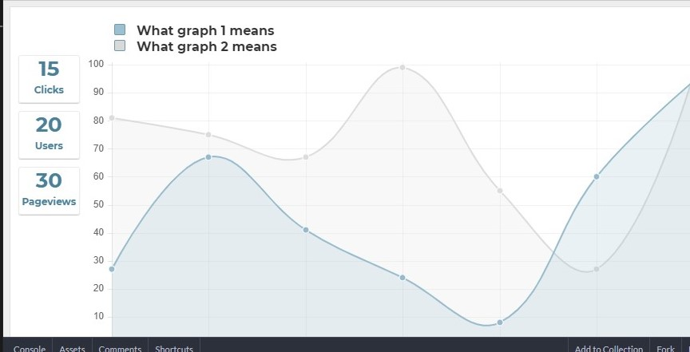

Home
Workouts
Progress
Progress Check!
Use this page to track your fitness progress over the months/years.

**Progress chart using JS under construction, for now here's a picture of what it will look like!**
**Progress chart using JS under construction, for now here's a picture of what it will look like!**